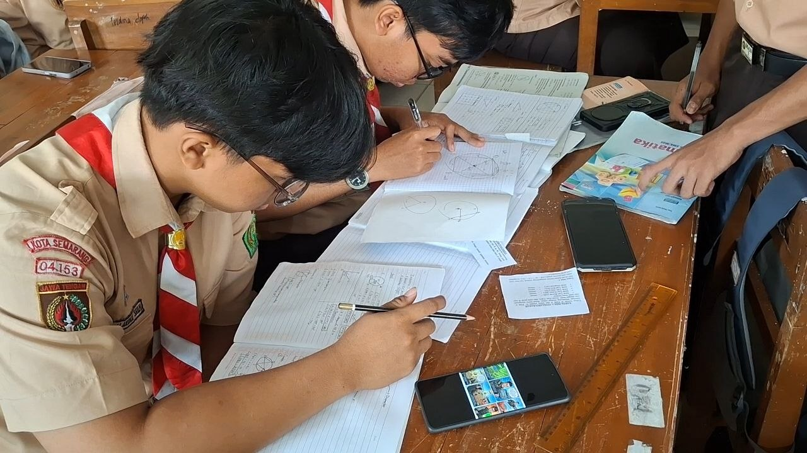
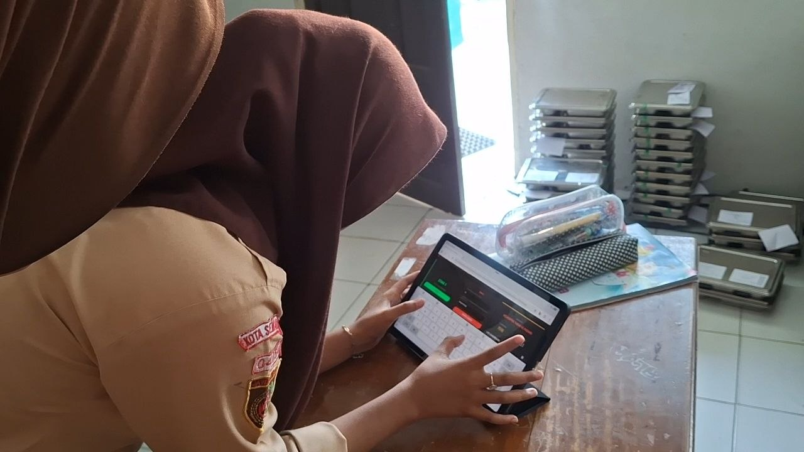
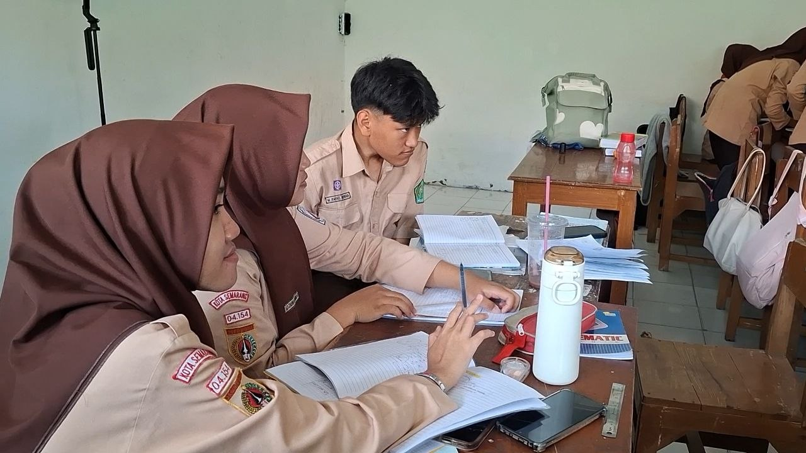
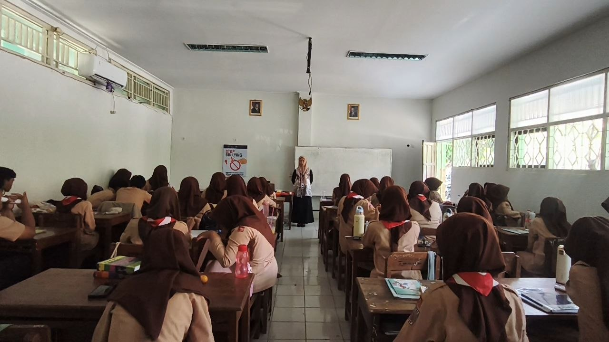

Siklus 4
Eksplorasi Konsep Segiempat Tali Busur Melalui Gamifikasi dan Pembelajaran Kolaboratif.
Pembelajaran submateri Segiempat Tali Busur (Teorema 4–7) berbasis Guided Discovery dan Think-Pair-Share. Diperkuat dengan modul gamifikasi Battle Royale Math Quest untuk meningkatkan keterlibatan aktif, kolaborasi tim, dan pemahaman konseptual geometri murid.

Perencanaan Pembelajaran
Buka DokumenLihat Analisis ▾
Modul ajar pada Siklus 4 dirancang secara rinci dan terstruktur untuk memfasilitasi pemahaman konseptual submateri Segiempat Tali Busur (Teorema 4 hingga Teorema 7). Perencanaan pembelajaran mengombinasikan variasi model pembelajaran aktif yang disesuaikan dengan karakteristik tiap teorema, yaitu Direct Instruction pada Pertemuan 1, Guided Discovery berbasis pemecahan masalah pada Pertemuan 2, serta Think-Pair-Share (TPS) pada Pertemuan 3. Modul ini secara konsisten mengintegrasikan prinsip diferensiasi proses (Teaching at the Right Level / TaRL) dan modalitas gamifikasi Battle Royale Math Quest guna menciptakan alur belajar yang inklusif, terarah, serta mampu mengikis tingkat kecemasan murid terhadap materi geometri yang kompleks.
Bahan Ajar Guru
Buka Bahan AjarLihat Analisis ▾
Bahan ajar beserta Lembar Kerja Murid (LKM) dikembangkan dengan pendekatan scaffolding visual yang sistematis untuk menuntun alur penalaran matematis murid secara mandiri. Penyajian ilustrasi gambar segiempat tali busur yang presisi, penggunaan media busur derajat, serta lembar tantangan berbantuan memudahkan murid dalam mengidentifikasi hubungan antar-segmen dan sudut yang berhadapan. Bahan ajar ini berhasil mentransformasi konsep-konsep pembuktian formal geometri yang abstrak menjadi langkah-langkah eksploratif yang intuitif, logis, dan terjangkau oleh tingkat pemahaman murid.
Media Pembelajaran
Lihat MediaLihat Analisis ▾
Bahan ajar beserta Lembar Kerja Murid (LKM) dikembangkan dengan pendekatan scaffolding visual yang sistematis untuk menuntun alur penalaran matematis murid secara mandiri. Penyajian ilustrasi gambar segiempat tali busur yang presisi, penggunaan media busur derajat, serta lembar tantangan berbantuan memudahkan murid dalam mengidentifikasi hubungan antar-segmen dan sudut yang berhadapan. Bahan ajar ini berhasil mentransformasi konsep-konsep pembuktian formal geometri yang abstrak menjadi langkah-langkah eksploratif yang intuitif, logis, dan terjangkau oleh tingkat pemahaman murid.
Video Pembelajaran
Lihat Analisis ▾
Dokumen video pembelajaran mendokumentasikan secara visual kepraktisan dan dinamika keterlibatan murid saat modul gamifikasi Battle Royale Math Quest diterapkan secara perdana di kelas. Rekaman audio-visual memperlihatkan antusiasme murid sejak tahap awal pembelajaran, di mana pengenalan skenario tantangan tim, pembagian peran (roles), dan aturan permainan mampu membangun rasa ingin tahu murid serta menciptakan atmosfer belajar yang interaktif. Video mendokumentasikan bagaimana pengemasan soal pembuktian geometri ke dalam format misi game berhasil mereduksi kecemasan murid terhadap materi segiempat tali busur (Teorema 5 dan 6). Selama kegiatan inti, video menangkap kolaborasi yang hidup di dalam kelompok. Setiap anggota tim tampak aktif berdiskusi dan menjalankan perannya masing-masing untuk menuntaskan tantangan pada Lembar Kerja Murid (LKM). Video ini juga merekam efektivitas guru sebagai fasilitator yang memberikan bimbingan berjenjang (scaffolding) saat kelompok mengalami hambatan, serta mendokumentasikan proses publikasi hasil karya melalui papan pajangan kelas (gallery display). Secara keseluruhan, rekaman video ini menjadi bukti autentik bahwa pengintegrasian Battle Royale Math Quest berhasil mengubah suasana pembelajaran geometri yang semula dianggap abstrak dan kaku menjadi pengalaman belajar kelompok yang aktif, kolaboratif, serta menyenangkan.
Dokumentasi Siklus 4




Refleksi & Rencana Tindak Lanjut
Dokumen Refleksi
Berisi catatan komprehensif mengenai hasil evaluasi Siklus 4, evaluasi alokasi waktu onboarding gamifikasi Battle Royale Math Quest, serta respons peserta didik terhadap pembuktian materi segiempat tali busur.
Buka Refleksi (Google Drive)
Rencana Tindak Lanjut
Berdasarkan refleksi Siklus 4, langkah perbaikan yang akan diimplementasikan meliputi:
- Penyederhanaan Onboarding Permainan: Menyusun petunjuk aturan Battle Royale Math Quest yang lebih ringkas dan intuitif agar pemahaman aturan di awal kelas tidak menyita alokasi waktu kegiatan inti.
- Penyediaan Petunjuk Bantuan (Scaffolding Hint): Menyediakan kartu petunjuk bantuan pada LKM untuk kelompok yang mengalami kemacetan berpikir pada tahap pembuktian, sehingga proses diskusi dapat berjalan lebih lancar dan tepat waktu.
- Penguatan Konsep Formal secara Klasikal: Tetap memberikan penegasan ulang di papan tulis pada akhir kegiatan guna menyatukan pemahaman seluruh peserta didik atas materi yang telah dipelajari.